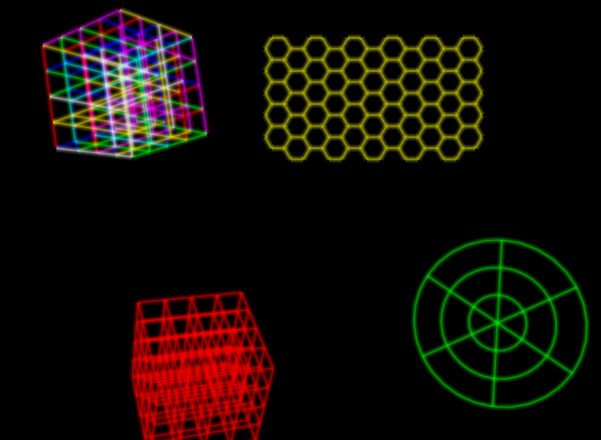

Vectrosity rendering backend
Category: progress
Tags: v3 vectrosity
I have finished the rendering backend for Vectrosity and updated the included examples to use it. Previous releases already came with an extension method that let you get the list of points to construct a vector line, but the actual construction of the vector line was up to the user.
The included example has several grids, among them is a bouncing grid which moves over the place but keeps its shape, and a resizing grid which does not move, but keeps changing its shape. Both types need to construct a vector line, but the lines had different properties, so each one had a custom ad-hoc script.
The new Vectrosity backend puts an end to this ad-hoc hackery: all you need to do is add one component to your object, set the properties to your liking and it will work. Of course the more low-level extension method still remains so you can implement your own backends. The example includes one grid where the colour of each segment of the vector line changes randomly, creating a very cool and flashy effect.

In the above picture the green (polar) and red (rectangular) grids are bouncing all over the place, while the yellow (hexagonal) grid keeps shrinking and expanding its radius. The rectangular grid in the upper left-hand corner is rotating around its centre while its line segments keep randomly shifting their colour. The bouncing, resizing and rotation are separate scripts not tied to the rendering backend.